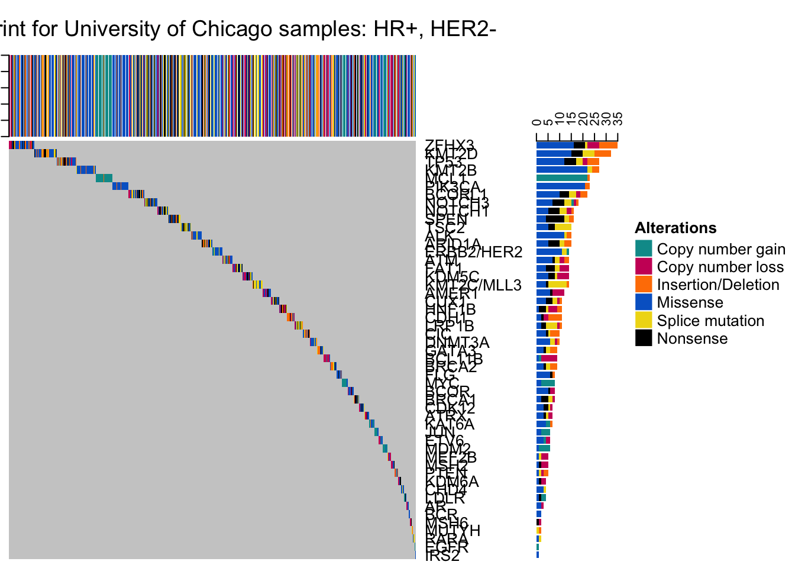
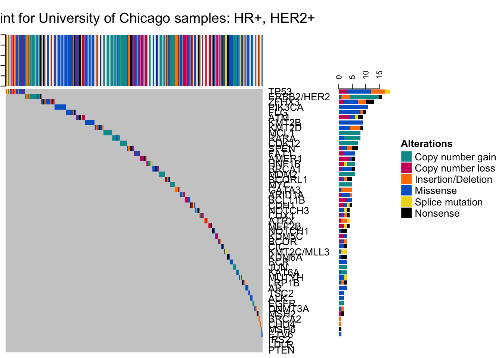
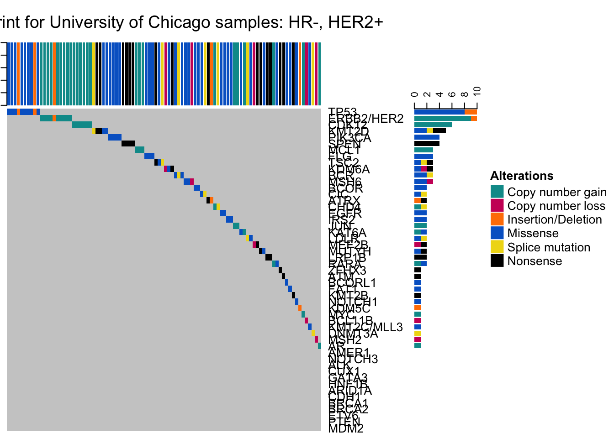
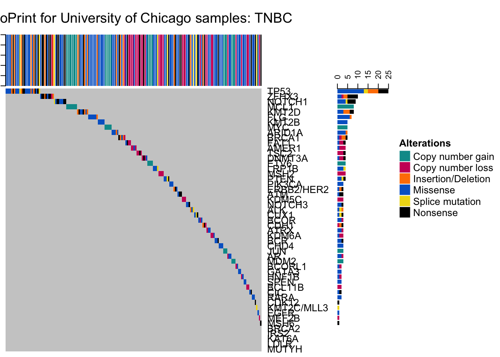

Tempus Data Analysis 5/29/2019
Last updated: 2019-05-29
workflowr checks: (Click a bullet for more information)-
✖ R Markdown file: uncommitted changes
The R Markdown file has unstaged changes. To know which version of the R Markdown file created these results, you’ll want to first commit it to the Git repo. If you’re still working on the analysis, you can ignore this warning. When you’re finished, you can runwflow_publishto commit the R Markdown file and build the HTML. -
✔ Environment: empty
Great job! The global environment was empty. Objects defined in the global environment can affect the analysis in your R Markdown file in unknown ways. For reproduciblity it’s best to always run the code in an empty environment.
-
✔ Seed:
set.seed(20190207)The command
set.seed(20190207)was run prior to running the code in the R Markdown file. Setting a seed ensures that any results that rely on randomness, e.g. subsampling or permutations, are reproducible. -
✔ Session information: recorded
Great job! Recording the operating system, R version, and package versions is critical for reproducibility.
-
Great! You are using Git for version control. Tracking code development and connecting the code version to the results is critical for reproducibility. The version displayed above was the version of the Git repository at the time these results were generated.✔ Repository version: 885580a
Note that you need to be careful to ensure that all relevant files for the analysis have been committed to Git prior to generating the results (you can usewflow_publishorwflow_git_commit). workflowr only checks the R Markdown file, but you know if there are other scripts or data files that it depends on. Below is the status of the Git repository when the results were generated:
Note that any generated files, e.g. HTML, png, CSS, etc., are not included in this status report because it is ok for generated content to have uncommitted changes.Ignored files: Ignored: .DS_Store Ignored: .Rhistory Ignored: .Rproj.user/ Ignored: analysis/.DS_Store Ignored: code/ Ignored: data/ Ignored: docs/.DS_Store Ignored: docs/figure/.DS_Store Ignored: output/.DS_Store Unstaged changes: Modified: analysis/Tempus.Rmd
Expand here to see past versions:
| File | Version | Author | Date | Message |
|---|---|---|---|---|
| Rmd | 885580a | Sheila Rajagopal | 2019-05-28 | 5/28 |
| html | 885580a | Sheila Rajagopal | 2019-05-28 | 5/28 |
| Rmd | 2ecfa66 | Sheila Rajagopal | 2019-05-24 | fixed survival curves |
| html | 2ecfa66 | Sheila Rajagopal | 2019-05-24 | fixed survival curves |
| html | 1da7664 | Sheila Rajagopal | 2019-02-12 | HTML file only |
| html | fbe8a8e | Sheila Rajagopal | 2019-02-12 | updated analysis pre abstract |
| Rmd | 733bba4 | Sheila Rajagopal | 2019-02-12 | repeat cleaned up analysis |
| Rmd | b3040b6 | Sheila Rajagopal | 2019-02-10 | analysis neo |
| Rmd | 3a23302 | Sheila Rajagopal | 2019-02-10 | analysis 3 |
| html | 3a23302 | Sheila Rajagopal | 2019-02-10 | analysis 3 |
| Rmd | 7fbf15a | Sheila Rajagopal | 2019-02-10 | analysis step 2 |
| html | 7fbf15a | Sheila Rajagopal | 2019-02-10 | analysis step 2 |
| Rmd | 99339fe | Sheila Rajagopal | 2019-02-10 | analysis step 1 |
| html | 99339fe | Sheila Rajagopal | 2019-02-10 | analysis step 1 |
| Rmd | 445bd8d | Sheila Rajagopal | 2019-02-08 | analysis 1 |
| html | 445bd8d | Sheila Rajagopal | 2019-02-08 | analysis 1 |
| html | 0333ca2 | Sheila Rajagopal | 2019-02-07 | website build 1 |
| html | 9620b54 | Sheila Rajagopal | 2019-02-07 | wflow_git_commit(all = TRUE) |
| Rmd | f7d6011 | Sheila Rajagopal | 2019-02-07 | start site |
| html | f7d6011 | Sheila Rajagopal | 2019-02-07 | start site |
Data structure and format
tempusmutationtemp$GeneInfo <- paste (tempusmutationtemp$variantcount, tempusmutationtemp$variant_name_C, tempusmutationtemp$variant_name_P, tempusmutationtemp$NM_number, tempusmutationtemp$typeofvariant, tempusmutationtemp$VAF, tempusmutationtemp$COSMICCases, sep='\t') # combines variant-specific variables into a temporary column for now
tempusmutationtemp <- tempusmutationtemp %>% group_by(StudyID, AccessionNo) %>%mutate(maxvariantcount = max(variantcount)) #Highest number of variants for an individual gene
tempusmutationtemp <- dplyr::select(tempusmutationtemp, -c(biologicalmeaning, variant_name_C, variant_name_P, NM_number, typeofvariant, VAF, COSMICCases, variantcount, Notes)) #drops excess columns for merge purposes
tempusmutationtemp <- tempusmutationtemp %>% spread(Gene,GeneInfo) #Creates individual columns for each gene with the Gene Information as the value, every variant has its own row
tempusmutationtemp$V1=NULL #Clears artificial columns that were created in the process of formatting the dataset
tempusmutationtemp$X=NULL
tempusmutationtemp <- tempusmutationtemp %>% group_by(StudyID, AccessionNo, PanelName, Normalspecimen, Normalcollecteddate, Normalreceiveddate, Tumorspecimen, Tumorcollecteddate, Tumorreceiveddate, TumorPercentage, TumorMutationalBurden, PercentileTumorMutationalBurd, MicrosatelliteInstabilityStatu, DateSigned, genecount, maxvariantcount) %>% summarise_all(funs(toString(na.omit(.), sep='\t'))) #This flattens all of the rows -> RIGHT NOW each patient is on one line and multiple mutations for the same gene are in one entry as are their variant information for ease of merge
tempusmerge <- merge (tempusclinical, tempusmutationtemp, by="StudyID", all.x=TRUE, all.y=FALSE, sort=FALSE) #Merging the clinical and mutational data into one database, reports are excluded if they do not have clinical information
tempusimmune$StudyID <- tempusimmune$study_id
tempusimmunetemp <- dplyr::select(tempusimmune, -c(order_id, TMB, msi_status, study_id)) #drops excess columns for merge purposes
tempusimmunetemp <- filter (tempusimmunetemp, !(is.na(b))) #Removes rows with no data (as some of these are duplicates and confuse the merge process)
tempusimmunetemp <- filter (tempusimmunetemp, (StudyID != "PN0198" & StudyID != "PN0206")) #Removes 2 duplicated rows in which the reason for duplication is not completely clear; this will need to be clarified later.
tempusmerge <- merge (tempusmerge, tempusimmunetemp, by="StudyID", all.x=TRUE) #Merging the immune information if available with the existing dataset. Data was excluded if clinical and mutational information were not also available. Data cleaning/new variable generation
tempusmerge$age50 <- ifelse(tempusmerge$age_at_diagnosis < 50, 1, 0) #binary variable for age < 50 (which equals 1)
tempusmerge$neoadj <- ifelse (((as.Date(as.character(tempusmerge$date_surg1), format="%m/%d/%Y")-as.Date(as.character(tempusmerge$date_cx1), format="%m/%d/%Y"))>0) & (tempusmerge$Stage!="4"), 1, 0) #determining if pts had neoadjuvant chemotherapy
tempusmerge$HRstatus <- ifelse (tempusmerge$ER=="Pos" | tempusmerge$PR=="Pos", 1, 0) #Hormone-receptor positive status
tempusmerge$subtype <- ifelse (tempusmerge$HER2.x=="Neg" & tempusmerge$HRstatus==0, "TNBC", NA) #Characterizing the subtype variable
tempusmerge$subtype <- ifelse (tempusmerge$HER2.x=="Pos" & tempusmerge$HRstatus==0, "HER+/HR-", tempusmerge$subtype) #Characterizing the subtype variable
tempusmerge$subtype <- ifelse (tempusmerge$HER2.x=="Pos" & tempusmerge$HRstatus==1, "HER+/HR+", tempusmerge$subtype) #Characterizing the subtype variable
tempusmerge$subtype <- ifelse (tempusmerge$HER2.x=="Neg" & tempusmerge$HRstatus==1, "HER-/HR+", tempusmerge$subtype) #Characterizing the subtype variable
tempusmerge$bw <- ifelse (tempusmerge$race=="Black", "Black", NA) #Characterizing black/white alone
tempusmerge$bw <- ifelse (tempusmerge$race=="White", "White", tempusmerge$bw)
tempusmerge$bw <- ifelse (tempusmerge$hispanic=="Yes", NA, tempusmerge$bw)
tempusmerge$vitalstatus <- ifelse (tempusmerge$vitalstatus=="0 Dead", "0", "1") #Factorizing vital status
tempusmerge$vitalstatussurv <- tempusmerge$vitalstatus
tempusmerge$vitalstatussurv <- ifelse (tempusmerge$vitalstatussurv=="1", 2, tempusmerge$vitalstatussurv)
tempusmerge$vitalstatussurv <- ifelse (tempusmerge$vitalstatussurv=="0", 1, tempusmerge$vitalstatussurv)
tempusmerge$vitalstatussurv <- ifelse (tempusmerge$vitalstatussurv=="2", 0, tempusmerge$vitalstatussurv) #switching 0 and 1 so they accurately reflect survival failure
tempusmerge$stage14 <- ifelse (tempusmerge$Stage %in% "1A",1,NA)
tempusmerge$stage14 <- ifelse (tempusmerge$Stage %in% "1B",1, tempusmerge$stage14)
tempusmerge$stage14 <- ifelse (tempusmerge$Stage %in% "1",1, tempusmerge$stage14)
tempusmerge$stage14 <- ifelse (tempusmerge$Stage %in% "2",2, tempusmerge$stage14)
tempusmerge$stage14 <- ifelse (tempusmerge$Stage %in% "2A",2, tempusmerge$stage14)
tempusmerge$stage14 <- ifelse (tempusmerge$Stage %in% "2B",2, tempusmerge$stage14)
tempusmerge$stage14 <- ifelse (tempusmerge$Stage %in% "3",3, tempusmerge$stage14)
tempusmerge$stage14 <- ifelse (tempusmerge$Stage %in% "3A",3, tempusmerge$stage14)
tempusmerge$stage14 <- ifelse (tempusmerge$Stage %in% "3B",3, tempusmerge$stage14)
tempusmerge$stage14 <- ifelse (tempusmerge$Stage %in% "3C",3, tempusmerge$stage14)
tempusmerge$stage14 <- ifelse (tempusmerge$Stage %in% "4",4, tempusmerge$stage14) #Numerical stage condensing
tempusmerge$nodeposneg <- ifelse (tempusmerge$RegionalNodePositive>0, 1, 0) #At least one positive lymph node
tempusmerge$recurrenceposneg <- ifelse (tempusmerge$type1strecurrence=="00 Patient became disease-free after treatment and has not had a recurrence.", 0, 1) #Positive/negative recurrence status alone without differentiation of site.
tempusmerge$recurrenceposneg <- ifelse (tempusmerge$type1strecurrence=="99 It is unknown whether the disease has recurred or if the patient was ever disease-free", NA, tempusmerge$recurrenceposneg) #Cleaning unknown recurrence variables from this
tempusmerge$recurrenceposneg <- ifelse (tempusmerge$type1strecurrence=="70 Since diagnosis, patient has never been disease-free. This includes cases with distant metastasis at diagnosis, systemic disease, unknown primary, or minimal disease that is not treated", NA, tempusmerge$recurrenceposneg) #Cleaning unknown recurrence variables from this
tempusmerge$pfs <- tempusmerge$vitalstatussurv
tempusmerge$pfs <- ifelse (tempusmerge$recurrenceposneg==1, 1, tempusmerge$pfs)
tempusmerge$pfs <- ifelse (is.na(tempusmerge$recurrenceposneg) & tempusmerge$vitalstatussurv==1, 1, tempusmerge$pfs)
tempusmerge$TMB <- tempusmerge$TumorMutationalBurden
tempusmerge$TMB <- str_replace(tempusmerge$TMB, pattern = " m/MB", replacement = "")
tempusmerge$TMB <- as.numeric(tempusmerge$TMB) #Numeric interpretation of mutational burden
tempusmerge$timefu <- ((as.Date(as.character(tempusmerge$date_FU), format="%m/%d/%y"))-(as.Date(as.character(tempusmerge$datedx), format="%m/%d/%y")))/365.25
tempusmerge$pfstimefu <- tempusmerge$timefu
tempusmerge$pfstimefu <- ifelse (tempusmerge$pfs==1 & tempusmerge$recurrenceposneg==1, ((as.Date(as.character(tempusmerge$dateRec), format="%m/%d/%y"))-(as.Date(as.character(tempusmerge$datedx), format="%m/%d/%y")))/365.25, tempusmerge$pfstimefu)
#duration of follow up for survival curves in years -> timefu is overall followup time and pfstimefu is followup time for progression free survival
tempusmergedupclean <- tempusmerge
tempusmergedupclean <- tempusmergedupclean[with(tempusmergedupclean, ave(TumorPercentage, StudyID, FUN=max)==TumorPercentage),] #keep duplicates by higher %
tempusmergedupclean <- tempusmergedupclean[with(tempusmergedupclean, ave(TMB, StudyID, FUN=max)==TMB),] #keep duplicates by higher TMB if same source, %Data summary
We have clinical information for 127 patients and mutation information for 131 patients. We have immune information for 70 patients.
We are missing clinical information for the following 4 patients. These are not included in the merged data set.
[1] "PN0118" "PN0124" "PN0153" "PN0155"duplicates <- tempusreports %>% filter(duplicated(StudyID) | duplicated(StudyID, fromLast = TRUE)) %>% select(StudyID, AccessionNo, Tumorspecimen, TumorPercentage)
duplicates8 patients have duplicate reports (most often primary tumor and lymph node) submitted with the above characteristics. These patients are included in the merged data set but in these cases, for any analysis, we counted each patient individually/once using the specimen that offered the best tumor percentage as relevant.
Of note, among the immune reports, IDs PN0198 (likely due to breast and lymph node samples) and PN0206 (unclear reasons) had 2 separate reports with differing values. As such, these immune reports were excluded from the analysis.
lymphnodes <- tempusreports %>% filter((Tumorspecimen=="Lymph node") & !(duplicated(StudyID) | duplicated(StudyID, fromLast = TRUE))) %>% select(StudyID, AccessionNo, Tumorspecimen, TumorPercentage)
lymphnodes3 patients have only lymph node submitted. These patients are included in the merged data set and treated as though they had primary tumor (as this was their only tumor specimen).
Clinical summary
Low-yield variables: Date and age of enrollment (38 patients), Sex (1 male patient), Insurance (1 patient with unknown insurance, 126 patients insured), Alcohol history (90 patients not reported), gravidity/parity (26 patients reported), menopause (26 patients reported), distant metastatic sites (only 2 sites reported), histology (14 patients with at least partial lobular disease), surgical margin (4 patients with ? residual disease), 2nd primary (only one patient reported), ki67: not known in 116/127 patients
Variables not incorporated for this analysis: Marital status at diagnosis, breast primary site, laterality, TNM edition and clinical staging (Rather than pathologic staging), lymphovascularinvasion (64 patients only reported), radiation variables

Expand here to see past versions of Clinical summary-1.png:
| Version | Author | Date |
|---|---|---|
| 99339fe | Sheila Rajagopal | 2019-02-10 |
This is the age distribution of patients at time of diagnosis. This population skews young but does have representation throughout the age range.
| age<50 | Freq |
|---|---|
| 0 | 70 |
| 1 | 57 |
| Not-Hispanic | Yes-Hispanic | |
|---|---|---|
| Asian | 1 | 0 |
| Black | 60 | 0 |
| White | 63 | 3 |
| Reported smoking history | Freq |
|---|---|
| 1 | |
| 00 Never used | 62 |
| 01 Cigarette smoker | 18 |
| 05 Previous tobacco use, but not at present time | 26 |
| 99 Unknown | 20 |
| Vital status | Freq |
|---|---|
| 0 Dead | 46 |
| 1 Alive | 81 |
| Recurrence | Freq |
|---|---|
| 0 | 81 |
| 1 | 38 |
| 1+ positive nodes | Freq |
|---|---|
| 0 | 51 |
| 1 | 76 |
| Grade | Freq |
|---|---|
| 1 | 7 |
| 2 | 46 |
| 3 | 64 |
| 9 | 8 |
| Compiled stage | Freq |
|---|---|
| 1 | 16 |
| 1A | 15 |
| 1B | 1 |
| 2A | 37 |
| 2B | 28 |
| 3 | 1 |
| 3A | 18 |
| 3B | 4 |
| 3C | 5 |
| 4 | 2 |
| Unk | HER-neg | HER2-pos | |
|---|---|---|---|
| 0 | 1 | 31 | 12 |
| 1 | 4 | 53 | 26 |
| Subtype | Freq |
|---|---|
| HER-/HR+ | 53 |
| HER+/HR- | 12 |
| HER+/HR+ | 26 |
| TNBC | 31 |
| Chemotherapy | Freq |
|---|---|
| No | 38 |
| Yes | 89 |
| Neoadjuvant therapy | Freq |
|---|---|
| 0 | 63 |
| 1 | 26 |
| Radiotherapy | Freq |
|---|---|
| No | 49 |
| Yes | 78 |
| Initial surgery type | Freq |
|---|---|
| 2 | |
| BCS | 48 |
| bilateral mam | 8 |
| mastectomy | 68 |
| other/uk/nos | 1 |
| Hormone therapy | Freq |
|---|---|
| No | 56 |
| Yes | 71 |
| Of note, with muta | tion testing prior to sequencing, we had 1 patient each report a BRCA 1 and BRCA 2 mutation. |
Mutation summary
Variables not incorporated for this analysis: Percentile mutational burden (incomplete)
We have representation of 560 genes with mutations in this data set (including both primary tumors and lymph nodes). The most common mutations (incorporating BOTH pathogenic + VUS) were as follows:
TP53 MCL1 PIK3CA ERBB2/HER2 ZFHX3 ATM
72 44 39 33 27 23
BCORL1 FAT1 KMT2B KMT2D NOTCH1 AMER1
23 23 23 23 23 22
CDK12 KDM5C FLG MYC NOTCH3 TSC2
21 21 20 20 20 19
ALK CUX1 GATA3 HNF1B SPEN ARID1A
18 18 18 18 18 17
BCL11B BCOR CIC CDH1 KMT2C/MLL3 ATRX
17 17 17 16 16 15 
Expand here to see past versions of Mutation summary and tumor purity-1.png:
| Version | Author | Date |
|---|---|---|
| 99339fe | Sheila Rajagopal | 2019-02-10 |
This is the tumor purity distribution of patients at time of diagnosis. 30% purity is conisdered sufficient to perform MSI testing, for example. 104 of our 127 samples met this criteria.
tempusoncoprint <- tempusmutation
tempusoncoprint$alteration <- NA
tempusoncoprint$variant <- NA
#tempusoncoprint$variant <- ifelse(tempusoncoprint$typeofvariant=="copy number gain" | tempusoncoprint$typeofvariant=="Copy number gain" | tempusoncoprint$typeofvariant=="Copy Number gain" | tempusoncoprint$typeofvariant=="copy numbre gain" | tempusoncoprint$typeofvariant=="copy number loss" | tempusoncoprint$typeofvariant=="Copy number loss" | tempusoncoprint$typeofvariant=="Copy numberloss" | tempusoncoprint$typeofvariant=="Copy Number Loss", "CNA", tempusoncoprint$variant)
tempusoncoprint$variant <- ifelse(tempusoncoprint$typeofvariant=="copy number gain" | tempusoncoprint$typeofvariant=="Copy number gain" | tempusoncoprint$typeofvariant=="Copy Number gain" | tempusoncoprint$typeofvariant=="copy numbre gain", "CNAGAIN", tempusoncoprint$variant)
tempusoncoprint$variant <- ifelse (tempusoncoprint$typeofvariant=="copy number loss" | tempusoncoprint$typeofvariant=="Copy number loss" | tempusoncoprint$typeofvariant=="Copy numberloss" | tempusoncoprint$typeofvariant=="Copy Number Loss", "CNALOSS", tempusoncoprint$variant)
tempusoncoprint$variant <- ifelse(tempusoncoprint$typeofvariant=="frameshift" | tempusoncoprint$typeofvariant=="Frameshift" | tempusoncoprint$typeofvariant=="Frameshift - LOF" | tempusoncoprint$typeofvariant=="Frameshift VAF:" | tempusoncoprint$typeofvariant=="Frameshift- LOF" | tempusoncoprint$typeofvariant=="Frameshift- LOF VAF" | tempusoncoprint$typeofvariant=="frameshift-LOF" | tempusoncoprint$typeofvariant=="FrameshiftVAF:" | tempusoncoprint$typeofvariant=="Inframe deletion" | tempusoncoprint$typeofvariant=="Inframe deletion - GOF" | tempusoncoprint$typeofvariant=="inframe insertion" | tempusoncoprint$typeofvariant=="Inframe insertion" | tempusoncoprint$typeofvariant=="Inframe insertion - GOF" | tempusoncoprint$typeofvariant=="rameshift" | tempusoncoprint$typeofvariant=="Frameshift LOF", "INFRAME", tempusoncoprint$variant)
tempusoncoprint$variant <- ifelse(tempusoncoprint$typeofvariant=="Missense variant" | tempusoncoprint$typeofvariant=="Missense varian(exon 10) - GOF" | tempusoncoprint$typeofvariant=="missense variant" | tempusoncoprint$typeofvariant=="Missense variant" | tempusoncoprint$typeofvariant=="Missense Variant" | tempusoncoprint$typeofvariant=="Missense variant -" | tempusoncoprint$typeofvariant=="Missense variant - GOF" | tempusoncoprint$typeofvariant=="Missense variant - LOF:" | tempusoncoprint$typeofvariant=="Missense variant (exon 10) - GOF" | tempusoncoprint$typeofvariant=="Missense variant (exon 10)- GOF" | tempusoncoprint$typeofvariant=="Missense variant (exon 14) - GOF" | tempusoncoprint$typeofvariant=="Missense variant (exon 21) - GOF" | tempusoncoprint$typeofvariant=="Missense variant (exon 21) - GOF VAF" | tempusoncoprint$typeofvariant=="Missense variant (exon 5) - GOF" | tempusoncoprint$typeofvariant=="Missense Variant (exon 8)- GOF" | tempusoncoprint$typeofvariant=="Missense Variant (exon 8)- GOF" | tempusoncoprint$typeofvariant=="Missense variant â\u0080\u0093 LOF" | tempusoncoprint$typeofvariant=="Missense variant GOF" | tempusoncoprint$typeofvariant=="Missense variant LOF" | tempusoncoprint$typeofvariant=="Missense variant -" | tempusoncoprint$typeofvariant=="Missense variant - GOF" | tempusoncoprint$typeofvariant=="Missense variant - LOF:" | tempusoncoprint$typeofvariant=="Missense variant- GOF" | tempusoncoprint$typeofvariant=="Missense variant LOF" | tempusoncoprint$typeofvariant=="Missense variant- LOF" | tempusoncoprint$typeofvariant=="Missense variant-LOF" | tempusoncoprint$typeofvariant=="Missense variant(exon 10) - GOF" | tempusoncoprint$typeofvariant=="Missense variant(exon 2) - GOF" | tempusoncoprint$typeofvariant=="Missense variant(exon 4) - GOF" | tempusoncoprint$typeofvariant=="Missense varian(exon 10) - GOF" | tempusoncoprint$typeofvariant=="Missense variant - LOF" | tempusoncoprint$typeofvariant=="Missesne variant" | tempusoncoprint$typeofvariant=="Missense variant -LOF", "MISSENSE", tempusoncoprint$variant)
tempusoncoprint$variant <- ifelse(tempusoncoprint$typeofvariant=="region variant" | tempusoncoprint$typeofvariant=="region variant- LOF" | tempusoncoprint$typeofvariant=="Splice" | tempusoncoprint$typeofvariant=="Splice region" | tempusoncoprint$typeofvariant=="Splice region vairant" | tempusoncoprint$typeofvariant=="Splice region vairant - LOF" | tempusoncoprint$typeofvariant=="splice region variant" | tempusoncoprint$typeofvariant=="Splice region variant" | tempusoncoprint$typeofvariant=="Splice region variant - LOF" | tempusoncoprint$typeofvariant=="Splice region variant -LOF" | tempusoncoprint$typeofvariant=="Splice region variant â\u0080\u0093 GOF" | tempusoncoprint$typeofvariant=="Splice region variant â\u0080\u0093 LOF" | tempusoncoprint$typeofvariant=="Splice region variant VAF" | tempusoncoprint$typeofvariant=="Splice region variant- GOF" | tempusoncoprint$typeofvariant=="Splice region variant- LOF" | tempusoncoprint$typeofvariant=="Splice region variant-(exon 3) â\u0080\u0093 GOF", "PROMOTER", tempusoncoprint$variant)
tempusoncoprint$variant <- ifelse(tempusoncoprint$typeofvariant=="Start loss" | tempusoncoprint$typeofvariant=="Start Loss" | tempusoncoprint$typeofvariant=="StartStop gain loss- LOF" | tempusoncoprint$typeofvariant=="stop gain" | tempusoncoprint$typeofvariant=="Stop gain" | tempusoncoprint$typeofvariant=="Stop Gain" | tempusoncoprint$typeofvariant=="Stop gain - LOF" | tempusoncoprint$typeofvariant=="Stop gain LOF" | tempusoncoprint$typeofvariant=="Stop gain VAF" | tempusoncoprint$typeofvariant=="Stop gain-" | tempusoncoprint$typeofvariant=="Stop gain- GOF" | tempusoncoprint$typeofvariant=="Stop gain-LOF" | tempusoncoprint$typeofvariant=="Stop loss" | tempusoncoprint$typeofvariant=="Stop gain(exon 4) - LOF" | tempusoncoprint$typeofvariant=="Stopgain" | tempusoncoprint$typeofvariant=="Stop gain- LOF", "TRUNC", tempusoncoprint$variant)
tempusoncoprint$variant <- ifelse(is.na(tempusoncoprint$variant), "OTHER", tempusoncoprint$variant)
#tempusoncoprint$alteration <- ifelse (is.na(tempusoncoprint$alteration), as.character(tempusoncoprint$variant_name_P), tempusoncoprint$alteration)
#tempusoncoprint$alteration <- ifelse (tempusoncoprint$alteration=="", "MUT", tempusoncoprint$alteration)
#tempusoncoprint$varinfo <- paste (tempusoncoprint$variant, tempusoncoprint$alteration, sep=',')
tempusoncoprint$caseID = paste (tempusoncoprint$StudyID, tempusoncoprint$AccessionNo)
subtype <- tempusmergedupclean %>% select(StudyID, AccessionNo, subtype)
tempusoncoprint <- merge(tempusoncoprint, subtype, all.x=TRUE)
germline <- tempusoncoprint %>% filter (VAF > 0.5) %>% select (StudyID, AccessionNo, TumorPercentage, VAF, Gene, variant_name_P) #List of possible germline variants given high allele frequency
cleanednames <- tempusmergedupclean %>% select(StudyID, AccessionNo)
germline <- merge(germline, cleanednames)
germlinetempusoncoprint <- dplyr::select(tempusoncoprint, -c(PanelName, Normalspecimen, Normalcollecteddate, Normalreceiveddate, Tumorspecimen, Tumorcollecteddate, Tumorreceiveddate, TumorPercentage, TumorMutationalBurden, PercentileTumorMutationalBurd, MicrosatelliteInstabilityStatu, DateSigned, biologicalmeaning, variant_name_C, variant_name_P, NM_number, typeofvariant, VAF, COSMICCases, variantcount, Notes, genecount, alteration))
#cbioportaloncoprint <- tempusoncoprint
#cbioportaloncoprint <- cbioportaloncoprint %>% select(AccessionNo, everything())
#cbioportaloncoprint$Gene <- as.character(cbioportaloncoprint$Gene)
#cbioportaloncoprint$Gene <- ifelse (cbioportaloncoprint$Gene=="ERBB2" | cbioportaloncoprint$Gene=="ERBB2 (HER2)" | cbioportaloncoprint$Gene=="ERBB2(HER2)" | cbioportaloncoprint$Gene=="ERBB2HER2)" | cbioportaloncoprint$Gene=="HER2", "ERBB2/HER2", cbioportaloncoprint$Gene)
#cbioportaloncoprint <- cbioportaloncoprint %>% dplyr::filter(Gene=="TP53" | Gene=="MCL1" | Gene=="PIK3CA" | Gene=="ERBB2/HER2" | Gene=="ZFHX3" | Gene=="ATM" | Gene=="BCORL1" | Gene=="FAT1" | Gene=="KMT2B" | Gene=="KMT2D" | Gene=="NOTCH1" | Gene=="AMER1" | Gene=="CDK12" | Gene=="KDM5C" | Gene=="FLG" | Gene=="MYC" | Gene=="NOTCH3" | Gene=="TSC2" | Gene=="ALK" | Gene=="CUX1" | Gene=="GATA3" | Gene=="HNF1B" | Gene=="SPEN" | Gene=="ARID1A" | Gene=="BCL11B" | Gene=="BCOR" | Gene=="CIC" | Gene=="CDH1" | Gene=="ATRX" | Gene=="BRCA1" | Gene=="BRCA2")
#cbioportaloncoprint$X<-NULL
#cbioportaloncoprint$StudyID<-NULL
#cbioportaloncoprint$caseID<-NULL
#write.table(cbioportaloncoprint, "cbioportaloncoprint.tsv", sep="\t", row.names=FALSE, col.names=FALSE)
tempusoncoprint <- tempusoncoprint %>% spread(Gene,variant)
tempusoncoprint$V1=NULL #Clears artificial columns that were created in the process of formatting the dataset
tempusoncoprint$X=NULL
tempusoncoprint$`ERBB2/HER2` <- coalesce(tempusoncoprint$ERBB2, tempusoncoprint$`ERBB2 (HER2)`, tempusoncoprint$`ERBB2(HER2)`, tempusoncoprint$`ERBB2HER2)`, tempusoncoprint$HER2)
tempusoncoprint$`KMT2A/MLL` <- coalesce(tempusoncoprint$MLL1, tempusoncoprint$`KMT2A(MLL)`, tempusoncoprint$`KMT2A (MLL)`, tempusoncoprint$`KMT2A (MLL1)`)
tempusoncoprint$`KMT2C/MLL3` <- coalesce(tempusoncoprint$MLL3, tempusoncoprint$`KMT2C(MLL3)`, tempusoncoprint$`KMT2C (MLL3)`)
tempusoncoprint <- tempusoncoprint %>% dplyr::select(caseID, subtype, TP53, MCL1, PIK3CA, `ERBB2/HER2`, ZFHX3, ATM, BCORL1, FAT1, KMT2B, KMT2D, NOTCH1, AMER1, CDK12, KDM5C, FLG, MYC, NOTCH3, TSC2, ALK, CUX1, GATA3, HNF1B, SPEN, ARID1A, BCL11B, BCOR, CIC, CDH1, `KMT2C/MLL3`, ATRX, BRCA1, BRCA2, CDK12, KDM6A, BCR, CHD4, CIC, EGFR, IRS2, JUN, KAT6A, LDLR, MEF2B, MSH6, MUTYH, DNMT3A, ETV6, LRP1B, MSH2, PTEN, TSC2, AR, RARA, MDM2, CTCF)
tempusoncoprintHRposHERneg <- tempusoncoprint %>% filter(subtype=="HER-/HR+")
tempusoncoprintHRposHERneg$StudyID=NULL
tempusoncoprintHRposHERneg$AccessionNo=NULL
tempusoncoprintHRposHERneg$subtype=NULL
mat = as.matrix(tempusoncoprintHRposHERneg)
mat[is.na(mat)] = ""
rownames(mat) = mat[, 1]
mat = mat[, -1]
mat= mat[, -ncol(mat)]
mat = t(mat)
col = c("CNAGAIN" = "#009999", "CNALOSS" = "#CC0066", "INFRAME" = "#FF8000", "MISSENSE" = "#0066CC", "PROMOTER" = "#EFD915", "TRUNC" = "black", "OTHER" = "#006600")
alter_fun = list(
CNAGAIN = function(x, y, w, h)
grid.rect(x, y, w*1, h*1,
gp = gpar(fill = col["CNAGAIN"], col = NA)),
CNALOSS = function(x, y, w, h)
grid.rect(x, y, w*1, h*1,
gp = gpar(fill = col["CNALOSS"], col = NA)),
INFRAME = function(x, y, w, h)
grid.rect(x, y, w*1, h*1,
gp = gpar(fill = col["INFRAME"], col = NA)),
MISSENSE = function(x, y, w, h)
grid.rect(x, y, w*1, h*1,
gp = gpar(fill = col["MISSENSE"], col = NA)),
PROMOTER = function(x, y, w, h)
grid.rect(x, y, w*1, h*1,
gp = gpar(fill = col["PROMOTER"], col = NA)),
TRUNC = function(x, y, w, h)
grid.rect(x, y, w*1, h*1,
gp = gpar(fill = col["TRUNC"], col = NA)),
OTHER = function(x, y, w, h)
grid.rect(x, y, w*1, h*1,
gp = gpar(fill = col["OTHER"], col = NA))
)
column_title = "OncoPrint for University of Chicago samples: HR+, HER2-"
heatmap_legend_param = list(title = "Alterations", at = c("CNAGAIN","CNALOSS", "INFRAME", "MISSENSE", "PROMOTER", "TRUNC", "OTHER"), labels = c("Copy number gain", "Copy number loss","Insertion/Deletion", "Missense", "Splice mutation", "Nonsense", "Mutation-Other"))
oncoPrint(mat,
alter_fun = alter_fun,
col = col,
column_title = column_title,
heatmap_legend_param = heatmap_legend_param,
show_pct=FALSE,
remove_empty_columns = TRUE,
row_names_gp = gpar(fontsize = 10)
)
tempusoncoprintHRposHERpos <- tempusoncoprint %>% filter(subtype=="HER+/HR+")
tempusoncoprintHRposHERpos$StudyID=NULL
tempusoncoprintHRposHERpos$AccessionNo=NULL
tempusoncoprintHRposHERpos$subtype=NULL
mat = as.matrix(tempusoncoprintHRposHERpos)
mat[is.na(mat)] = ""
rownames(mat) = mat[, 1]
mat = mat[, -1]
mat= mat[, -ncol(mat)]
mat = t(mat)
col = c("CNAGAIN" = "#009999", "CNALOSS" = "#CC0066", "INFRAME" = "#FF8000", "MISSENSE" = "#0066CC", "PROMOTER" = "#EFD915", "TRUNC" = "black", "OTHER" = "#006600")
alter_fun = list(
CNAGAIN = function(x, y, w, h)
grid.rect(x, y, w*1, h*1,
gp = gpar(fill = col["CNAGAIN"], col = NA)),
CNALOSS = function(x, y, w, h)
grid.rect(x, y, w*1, h*1,
gp = gpar(fill = col["CNALOSS"], col = NA)),
INFRAME = function(x, y, w, h)
grid.rect(x, y, w*1, h*1,
gp = gpar(fill = col["INFRAME"], col = NA)),
MISSENSE = function(x, y, w, h)
grid.rect(x, y, w*1, h*1,
gp = gpar(fill = col["MISSENSE"], col = NA)),
PROMOTER = function(x, y, w, h)
grid.rect(x, y, w*1, h*1,
gp = gpar(fill = col["PROMOTER"], col = NA)),
TRUNC = function(x, y, w, h)
grid.rect(x, y, w*1, h*1,
gp = gpar(fill = col["TRUNC"], col = NA)),
OTHER = function(x, y, w, h)
grid.rect(x, y, w*1, h*1,
gp = gpar(fill = col["OTHER"], col = NA))
)
column_title = "OncoPrint for University of Chicago samples: HR+, HER2+"
heatmap_legend_param = list(title = "Alterations", at = c("CNAGAIN","CNALOSS", "INFRAME", "MISSENSE", "PROMOTER", "TRUNC", "OTHER"), labels = c("Copy number gain", "Copy number loss","Insertion/Deletion", "Missense", "Splice mutation", "Nonsense", "Mutation-Other"))
oncoPrint(mat,
alter_fun = alter_fun,
col = col,
column_title = column_title,
heatmap_legend_param = heatmap_legend_param,
show_pct=FALSE,
remove_empty_columns = TRUE,
row_names_gp = gpar(fontsize = 10)
)
tempusoncoprintHERpos <- tempusoncoprint %>% filter(subtype=="HER+/HR-")
tempusoncoprintHERpos$StudyID=NULL
tempusoncoprintHERpos$AccessionNo=NULL
tempusoncoprintHERpos$subtype=NULL
mat = as.matrix(tempusoncoprintHERpos)
mat[is.na(mat)] = ""
rownames(mat) = mat[, 1]
mat = mat[, -1]
mat= mat[, -ncol(mat)]
mat = t(mat)
col = c("CNAGAIN" = "#009999", "CNALOSS" = "#CC0066", "INFRAME" = "#FF8000", "MISSENSE" = "#0066CC", "PROMOTER" = "#EFD915", "TRUNC" = "black", "OTHER" = "#006600")
alter_fun = list(
CNAGAIN = function(x, y, w, h)
grid.rect(x, y, w*1, h*1,
gp = gpar(fill = col["CNAGAIN"], col = NA)),
CNALOSS = function(x, y, w, h)
grid.rect(x, y, w*1, h*1,
gp = gpar(fill = col["CNALOSS"], col = NA)),
INFRAME = function(x, y, w, h)
grid.rect(x, y, w*1, h*1,
gp = gpar(fill = col["INFRAME"], col = NA)),
MISSENSE = function(x, y, w, h)
grid.rect(x, y, w*1, h*1,
gp = gpar(fill = col["MISSENSE"], col = NA)),
PROMOTER = function(x, y, w, h)
grid.rect(x, y, w*1, h*1,
gp = gpar(fill = col["PROMOTER"], col = NA)),
TRUNC = function(x, y, w, h)
grid.rect(x, y, w*1, h*1,
gp = gpar(fill = col["TRUNC"], col = NA)),
OTHER = function(x, y, w, h)
grid.rect(x, y, w*1, h*1,
gp = gpar(fill = col["OTHER"], col = NA))
)
column_title = "OncoPrint for University of Chicago samples: HR-, HER2+"
heatmap_legend_param = list(title = "Alterations", at = c("CNAGAIN","CNALOSS", "INFRAME", "MISSENSE", "PROMOTER", "TRUNC", "OTHER"), labels = c("Copy number gain", "Copy number loss","Insertion/Deletion", "Missense", "Splice mutation", "Nonsense", "Mutation-Other"))
oncoPrint(mat,
alter_fun = alter_fun,
col = col,
column_title = column_title,
heatmap_legend_param = heatmap_legend_param,
show_pct=FALSE,
remove_empty_columns = TRUE,
row_names_gp = gpar(fontsize = 10)
)
tempusoncoprintTNBC <- tempusoncoprint %>% filter(subtype=="TNBC")
tempusoncoprintTNBC$StudyID=NULL
tempusoncoprintTNBC$AccessionNo=NULL
tempusoncoprintTNBC$subtype=NULL
mat = as.matrix(tempusoncoprintTNBC)
mat[is.na(mat)] = ""
rownames(mat) = mat[, 1]
mat = mat[, -1]
mat= mat[, -ncol(mat)]
mat = t(mat)
col = c("CNAGAIN" = "#009999", "CNALOSS" = "#CC0066", "INFRAME" = "#FF8000", "MISSENSE" = "#0066CC", "PROMOTER" = "#EFD915", "TRUNC" = "black", "OTHER" = "#006600")
alter_fun = list(
CNAGAIN = function(x, y, w, h)
grid.rect(x, y, w*1, h*1,
gp = gpar(fill = col["CNAGAIN"], col = NA)),
CNALOSS = function(x, y, w, h)
grid.rect(x, y, w*1, h*1,
gp = gpar(fill = col["CNALOSS"], col = NA)),
INFRAME = function(x, y, w, h)
grid.rect(x, y, w*1, h*1,
gp = gpar(fill = col["INFRAME"], col = NA)),
MISSENSE = function(x, y, w, h)
grid.rect(x, y, w*1, h*1,
gp = gpar(fill = col["MISSENSE"], col = NA)),
PROMOTER = function(x, y, w, h)
grid.rect(x, y, w*1, h*1,
gp = gpar(fill = col["PROMOTER"], col = NA)),
TRUNC = function(x, y, w, h)
grid.rect(x, y, w*1, h*1,
gp = gpar(fill = col["TRUNC"], col = NA)),
OTHER = function(x, y, w, h)
grid.rect(x, y, w*1, h*1,
gp = gpar(fill = col["OTHER"], col = NA))
)
column_title = "OncoPrint for University of Chicago samples: TNBC"
heatmap_legend_param = list(title = "Alterations", at = c("CNAGAIN","CNALOSS", "INFRAME", "MISSENSE", "PROMOTER", "TRUNC", "OTHER"), labels = c("Copy number gain", "Copy number loss","Insertion/Deletion", "Missense", "Splice mutation", "Nonsense", "Mutation-Other"))
oncoPrint(mat,
alter_fun = alter_fun,
col = col,
column_title = column_title,
heatmap_legend_param = heatmap_legend_param,
show_pct=FALSE,
remove_empty_columns = TRUE,
row_names_gp = gpar(fontsize = 10)
)
Min. 1st Qu. Median Mean 3rd Qu. Max.
0.000 1.300 2.900 7.562 6.050 76.300 
Expand here to see past versions of Ongoing mutational summary-1.png:
| Version | Author | Date |
|---|---|---|
| 7fbf15a | Sheila Rajagopal | 2019-02-10 |
| 99339fe | Sheila Rajagopal | 2019-02-10 |
Warning in chisq.test(tempusmergedupclean$BRCAYN, tempusmergedupclean$TMB):
Chi-squared approximation may be incorrect
Pearson's Chi-squared test
data: tempusmergedupclean$BRCAYN and tempusmergedupclean$TMB
X-squared = 71.777, df = 37, p-value = 0.0005269Only 88 of 139 reports contained percentile information; this was not included for analysis. Tumor mutational burden was measured in m/MB.
Increased TMB was associated with BRCA1 and 2 mutational status.
| MSI status | Freq |
|---|---|
| Equivocal | 6 |
| High | 2 |
| MSI can not be assessed because the tumor content is below 30%. | 6 |
| Stable | 64 |
| Stable (MSS) | 43 |
| Undetermined | 6 |
| The majority of patients had stable MSI status in their tumors; on | ly 1.5% showed MSI unstable disease. |
Min. 1st Qu. Median Mean 3rd Qu. Max. NA's
0.00000 0.06972 0.10595 0.11215 0.15008 0.30414 58 
Expand here to see past versions of Immune summary-1.png:
| Version | Author | Date |
|---|---|---|
| 885580a | Sheila Rajagopal | 2019-05-28 |
| 2ecfa66 | Sheila Rajagopal | 2019-05-24 |
Min. 1st Qu. Median Mean 3rd Qu. Max. NA's
0.1271 0.2409 0.2714 0.2718 0.3018 0.3944 58 
Expand here to see past versions of Immune summary-2.png:
| Version | Author | Date |
|---|---|---|
| 2ecfa66 | Sheila Rajagopal | 2019-05-24 |
Min. 1st Qu. Median Mean 3rd Qu. Max. NA's
0.03134 0.09566 0.13081 0.12943 0.16956 0.26398 58 
Expand here to see past versions of Immune summary-3.png:
| Version | Author | Date |
|---|---|---|
| 2ecfa66 | Sheila Rajagopal | 2019-05-24 |
Min. 1st Qu. Median Mean 3rd Qu. Max. NA's
0.2139 0.3529 0.3711 0.3835 0.4171 0.5216 58 
Expand here to see past versions of Immune summary-4.png:
| Version | Author | Date |
|---|---|---|
| 2ecfa66 | Sheila Rajagopal | 2019-05-24 |
Min. 1st Qu. Median Mean 3rd Qu. Max. NA's
0.04802 0.06850 0.09240 0.10309 0.12424 0.22419 58 
Expand here to see past versions of Immune summary-5.png:
| Version | Author | Date |
|---|---|---|
| 2ecfa66 | Sheila Rajagopal | 2019-05-24 |
Min. 1st Qu. Median Mean 3rd Qu. Max. NA's
0.00000 0.05514 0.10400 0.11939 0.16116 0.82456 58 
Expand here to see past versions of Immune summary-6.png:
| Version | Author | Date |
|---|---|---|
| 2ecfa66 | Sheila Rajagopal | 2019-05-24 |
74 patients had “immune profile” data as calculated by Tempus. This represents a derivation from the RNA-seq data that was developed from a machine learning algorithm, NOT a pathology-based assessment. The immune score is a “support vector regression model for the immune cell estimates and formal thresholds for high or low are not in place as of yet.”
Study IDs MB-0910 and MB-1073 represent patients with metastatic disease. Going forward, we will exclude these patients from the cohort to better gauge the effect of our markers under evaluation on survival and recurrence.
Recurrence and survival by ethnicity in our cohort (significant)
tempusmergedupclean <- tempusmergedupclean %>% filter(stage14!=4)
fitsurvival <- survfit(Surv(time=tempusmergedupclean$timefu, as.numeric(tempusmergedupclean$vitalstatussurv)) ~tempusmergedupclean$bw,
data=tempusmergedupclean)
ggsurvplot(fitsurvival, data=tempusmergedupclean, risk.table="absolute", pval=TRUE, xlab = "Time in years", xlim=c(0, 10), break.time.by=1, title="Survival of patients by ethnicity")
Expand here to see past versions of Ethnicity recurrence and survival-1.png:
| Version | Author | Date |
|---|---|---|
| 885580a | Sheila Rajagopal | 2019-05-28 |
| 2ecfa66 | Sheila Rajagopal | 2019-05-24 |
fitrecurrence <- survfit(Surv(time=tempusmergedupclean$pfstimefu, as.numeric(tempusmergedupclean$pfs)) ~tempusmergedupclean$bw,
data=tempusmergedupclean)
ggsurvplot(fitrecurrence, data=tempusmergedupclean, risk.table="absolute", pval=TRUE, xlab = "Time in years", xlim=c(0, 10), break.time.by=1, ylab="Recurrence", title="Progression-free survival in patients by ethnicity")
Expand here to see past versions of Ethnicity recurrence and survival-2.png:
| Version | Author | Date |
|---|---|---|
| 885580a | Sheila Rajagopal | 2019-05-28 |
| 2ecfa66 | Sheila Rajagopal | 2019-05-24 |
Mutations among different subgroups - Subtype and race (TP53 significant in general)
subtypeHERposHRneg <- tempusmergedupclean %>% filter(subtype=="HER+/HR-")
allgenesHERposHRneg <- colSums(!((subtypeHERposHRneg[,105:663])==""))
allgenesHERposHRneg["ERBB2/HER2"] <- sum(allgenesHERposHRneg["ERBB2"], allgenesHERposHRneg["ERBB2 (HER2)"], allgenesHERposHRneg["ERBB2(HER2)"], allgenesHERposHRneg["ERBB2HER2)"], allgenesHERposHRneg["HER2"])
headHERposHRneg <- head(sort(allgenesHERposHRneg, decreasing=TRUE), 20)
headHERposHRneg TP53 CDK12 ERBB2 PIK3CA ERBB2 (HER2)
9 6 6 4 3
FLG KDM6A MCL1 BCOR BCR
3 3 3 2 2
CHD4 CIC EGFR IRS2 JUN
2 2 2 2 2
KAT6A LDLR MEF2B MSH6 MUTYH
2 2 2 2 2 subtypeHERnegHRpos <- tempusmergedupclean %>% filter(subtype=="HER-/HR+")
allgenesHERnegHRpos <- colSums(!((subtypeHERnegHRpos[,105:663])==""))
allgenesHERnegHRpos["ERBB2/HER2"] <- sum(allgenesHERnegHRpos["ERBB2"], allgenesHERnegHRpos["ERBB2 (HER2)"], allgenesHERnegHRpos["ERBB2(HER2)"], allgenesHERnegHRpos["ERBB2HER2)"], allgenesHERnegHRpos["HER2"])
headHERnegHRpos <- head(sort(allgenesHERnegHRpos, decreasing=TRUE), 20)
headHERnegHRpos MCL1 PIK3CA TP53 ZFHX3 BCORL1 KMT2B KMT2D ALK AMER1 FAT1
22 20 19 15 14 13 12 11 11 11
KDM5C LZTR1 NOTCH1 ATM MAP3K1 NOTCH3 SPEN BCL11B CDH1 CIC
11 11 11 10 10 10 10 9 9 9 subtypeTNBC <- tempusmergedupclean %>% filter(subtype=="TNBC")
allgenesTNBC <- colSums(!((subtypeTNBC[,105:663])==""))
allgenesTNBC["ERBB2/HER2"] <- sum(allgenesTNBC["ERBB2"], allgenesTNBC["ERBB2 (HER2)"], allgenesTNBC["ERBB2(HER2)"], allgenesTNBC["ERBB2HER2)"], allgenesTNBC["HER2"])
headTNBC<- head(sort(allgenesTNBC, decreasing=TRUE), 20)
headTNBC TP53 MCL1 NOTCH1 FLG KMT2C MYC AMER1 CDK4 CDKN1B DNMT3A
25 8 7 5 5 5 4 4 4 4
ETV6 FAT1 KRAS LRP1B MSH2 PTEN TSC2 ZFHX3 ALK AR
4 4 4 4 4 4 4 4 3 3 subtypeHERposHRpos <- tempusmergedupclean %>% filter(subtype=="HER+/HR+")
allgenesHERposHRpos <- colSums(!((subtypeHERposHRpos[,105:663])==""))
allgenesHERposHRpos["ERBB2/HER2"] <- sum(allgenesHERposHRpos["ERBB2"], allgenesHERposHRpos["ERBB2 (HER2)"], allgenesHERposHRpos["ERBB2(HER2)"], allgenesHERposHRpos["ERBB2HER2)"], allgenesHERposHRpos["HER2"])
headHERposHRpos <- head(sort(allgenesHERposHRpos, decreasing=TRUE), 20)
headHERposHRpos TP53 PIK3CA ERBB2 (HER2) ATM MCL1
17 10 9 8 8
CDK12 RARA AMER1 HNF1B MDM2
7 7 6 6 6
BCL11B CDK4 FLG GATA3 MYC
5 5 5 5 5
NRG1 BCORL1 BRCA1 CDH1 CTCF
5 4 4 4 4 chisq.test(headHERnegHRpos, headHERposHRneg, headTNBC, headHERposHRpos)
Pearson's Chi-squared test
data: headHERnegHRpos and headHERposHRneg
X-squared = 74.444, df = 36, p-value = 0.0001725subtypewhite <- tempusmergedupclean %>% filter(race=="White")
allgeneswhite<- colSums(!((subtypewhite[,105:663])==""))
allgeneswhite["ERBB2/HER2"] <- sum(allgeneswhite["ERBB2"], allgeneswhite["ERBB2 (HER2)"], allgeneswhite["ERBB2(HER2)"], allgeneswhite["ERBB2HER2)"], allgeneswhite["HER2"])
headwhite <- head(sort(allgeneswhite, decreasing=TRUE), 5)
headwhite TP53 MCL1 PIK3CA BCORL1 KDM5C
32 25 19 13 13 subtypeblack <- tempusmergedupclean %>% filter(race=="Black")
allgenesblack<- colSums(!((subtypeblack[,105:663])==""))
allgenesblack["ERBB2/HER2"] <- sum(allgenesblack["ERBB2"], allgenesblack["ERBB2 (HER2)"], allgenesblack["ERBB2(HER2)"], allgenesblack["ERBB2HER2)"], allgenesblack["HER2"])
headblack <- head(sort(allgenesblack, decreasing=TRUE), 5)
headblack TP53 PIK3CA MCL1 ZFHX3 ATM
40 19 18 15 12 chisq.test(headwhite, headblack)
Pearson's Chi-squared test
data: headwhite and headblack
X-squared = 15, df = 12, p-value = 0.2414We saw a trend towards significance in our cohort between breast cancer subtype and the most commonly mutated genes (outside of overrepresentation of ERBB2/HER2 in the HER2+ subtype), as well as no significant difference between ethnicty and most commonly mutated genes.
#TP53 status
tempusmergedupclean$TP53YN <- ifelse (tempusmergedupclean$TP53=="", 0, 1)
fitsurvival <- survfit(Surv(time=tempusmergedupclean$timefu, as.numeric(tempusmergedupclean$vitalstatussurv)) ~tempusmergedupclean$TP53YN,
data=tempusmergedupclean)
ggsurvplot(fitsurvival, data=tempusmergedupclean, risk.table="absolute", pval=TRUE, xlab = "Time in years", xlim=c(0, 10), break.time.by=1, title="Survival of patients by TP53 mutation status")
Expand here to see past versions of Outcomes by mutation status-1.png:
| Version | Author | Date |
|---|---|---|
| 885580a | Sheila Rajagopal | 2019-05-28 |
| 2ecfa66 | Sheila Rajagopal | 2019-05-24 |
fitrecurrence <- survfit(Surv(time=tempusmergedupclean$pfstimefu, as.numeric(tempusmergedupclean$pfs)) ~tempusmergedupclean$TP53YN,
data=tempusmergedupclean)
ggsurvplot(fitrecurrence, data=tempusmergedupclean, risk.table="absolute", pval=TRUE, xlab = "Time in years", xlim=c(0, 10), break.time.by=1, ylab="Recurrence", title="Likelihood of recurrence in patients by TP53 mutation status")
Expand here to see past versions of Outcomes by mutation status-2.png:
| Version | Author | Date |
|---|---|---|
| 885580a | Sheila Rajagopal | 2019-05-28 |
| 2ecfa66 | Sheila Rajagopal | 2019-05-24 |
#BRCA status
fitsurvival <- survfit(Surv(time=tempusmergedupclean$timefu, as.numeric(tempusmergedupclean$vitalstatussurv)) ~tempusmergedupclean$BRCAYN,
data=tempusmergedupclean)
ggsurvplot(fitsurvival, data=tempusmergedupclean, risk.table="absolute", pval=TRUE, xlab = "Time in years", xlim=c(0, 10), break.time.by=1, title="Survival of patients by BRCA mutation status")
Expand here to see past versions of Outcomes by mutation status-3.png:
| Version | Author | Date |
|---|---|---|
| 885580a | Sheila Rajagopal | 2019-05-28 |
| 2ecfa66 | Sheila Rajagopal | 2019-05-24 |
fitrecurrence <- survfit(Surv(time=tempusmergedupclean$pfstimefu, as.numeric(tempusmergedupclean$pfs)) ~tempusmergedupclean$BRCAYN,
data=tempusmergedupclean)
ggsurvplot(fitrecurrence, data=tempusmergedupclean, risk.table="absolute", pval=TRUE, xlab = "Time in years", xlim=c(0, 10), break.time.by=1, ylab="Recurrence", title="Likelihood of recurrence in patients by BRCA mutation status")
Expand here to see past versions of Outcomes by mutation status-4.png:
| Version | Author | Date |
|---|---|---|
| 885580a | Sheila Rajagopal | 2019-05-28 |
| 2ecfa66 | Sheila Rajagopal | 2019-05-24 |
#AR receptor status
tempusmergedupclean$ARYN <- ifelse (tempusmergedupclean$AR=="", 0, 1)
fitsurvival <- survfit(Surv(time=tempusmergedupclean$timefu, as.numeric(tempusmergedupclean$vitalstatussurv)) ~tempusmergedupclean$ARYN,
data=tempusmergedupclean)
ggsurvplot(fitsurvival, data=tempusmergedupclean, risk.table="absolute", pval=TRUE, xlab = "Time in years", xlim=c(0, 10), break.time.by=1, title="Survival of patients by AR mutation status")
Expand here to see past versions of Outcomes by mutation status-5.png:
| Version | Author | Date |
|---|---|---|
| 885580a | Sheila Rajagopal | 2019-05-28 |
| 2ecfa66 | Sheila Rajagopal | 2019-05-24 |
fitrecurrence <- survfit(Surv(time=tempusmergedupclean$pfstimefu, as.numeric(tempusmergedupclean$pfs)) ~tempusmergedupclean$ARYN,
data=tempusmergedupclean)
ggsurvplot(fitrecurrence, data=tempusmergedupclean, risk.table="absolute", pval=TRUE, xlab = "Time in years", xlim=c(0, 10), break.time.by=1, ylab="Recurrence", title="Likelihood of recurrence in patients by AR mutation status")
Expand here to see past versions of Outcomes by mutation status-6.png:
| Version | Author | Date |
|---|---|---|
| 885580a | Sheila Rajagopal | 2019-05-28 |
| 2ecfa66 | Sheila Rajagopal | 2019-05-24 |
#PIK3CA mutation status
tempusmergedupclean$PIK3CAYN <- ifelse (tempusmergedupclean$PIK3CA=="", 0, 1)
fitsurvival <- survfit(Surv(time=tempusmergedupclean$timefu, as.numeric(tempusmergedupclean$vitalstatussurv)) ~tempusmergedupclean$PIK3CAYN,
data=tempusmergedupclean)
ggsurvplot(fitsurvival, data=tempusmergedupclean, risk.table="absolute", pval=TRUE, xlab = "Time in years", xlim=c(0, 10), break.time.by=1, title="Survival of patients by PIK3CA mutation status")
Expand here to see past versions of Outcomes by mutation status-7.png:
| Version | Author | Date |
|---|---|---|
| 885580a | Sheila Rajagopal | 2019-05-28 |
| 2ecfa66 | Sheila Rajagopal | 2019-05-24 |
fitrecurrence <- survfit(Surv(time=tempusmergedupclean$pfstimefu, as.numeric(tempusmergedupclean$pfs)) ~tempusmergedupclean$PIK3CAYN,
data=tempusmergedupclean)
ggsurvplot(fitrecurrence, data=tempusmergedupclean, risk.table="absolute", pval=TRUE, xlab = "Time in years", xlim=c(0, 10), break.time.by=1, ylab="Recurrence", title="Likelihood of recurrence in patients by PIK3CA mutation status")
Expand here to see past versions of Outcomes by mutation status-8.png:
| Version | Author | Date |
|---|---|---|
| 885580a | Sheila Rajagopal | 2019-05-28 |
| 2ecfa66 | Sheila Rajagopal | 2019-05-24 |
#ATM mutation status
tempusmergedupclean$ATMYN <- ifelse (tempusmergedupclean$ATM=="", 0, 1)
fitsurvival <- survfit(Surv(time=tempusmergedupclean$timefu, as.numeric(tempusmergedupclean$vitalstatussurv)) ~tempusmergedupclean$ATMYN,
data=tempusmergedupclean)
ggsurvplot(fitsurvival, data=tempusmergedupclean, risk.table="absolute", pval=TRUE, xlab = "Time in years", xlim=c(0, 10), break.time.by=1, title="Survival of patients by ATM mutation status")
Expand here to see past versions of Outcomes by mutation status-9.png:
| Version | Author | Date |
|---|---|---|
| 885580a | Sheila Rajagopal | 2019-05-28 |
fitrecurrence <- survfit(Surv(time=tempusmergedupclean$pfstimefu, as.numeric(tempusmergedupclean$pfs)) ~tempusmergedupclean$ATMYN,
data=tempusmergedupclean)
ggsurvplot(fitrecurrence, data=tempusmergedupclean, risk.table="absolute", pval=TRUE, xlab = "Time in years", xlim=c(0, 10), break.time.by=1, ylab="Recurrence", title="Likelihood of recurrence in patients by ATM mutation status")
Expand here to see past versions of Outcomes by mutation status-10.png:
| Version | Author | Date |
|---|---|---|
| 885580a | Sheila Rajagopal | 2019-05-28 |
Immune profile data and association with survival and recurrence (TMB trends with recurrence)
chisq.test (tempusmergedupclean$neoadj, tempusmergedupclean$TMB)Warning in chisq.test(tempusmergedupclean$neoadj, tempusmergedupclean$TMB):
Chi-squared approximation may be incorrect
Pearson's Chi-squared test
data: tempusmergedupclean$neoadj and tempusmergedupclean$TMB
X-squared = 27.692, df = 27, p-value = 0.427tempusmergedupclean$TMBhighlow <- ifelse(tempusmergedupclean$TMB>9, 1, 0)
fitsurvival <- survfit(Surv(time=tempusmergedupclean$timefu, as.numeric(tempusmergedupclean$vitalstatussurv)) ~tempusmergedupclean$TMBhighlow,
data=tempusmergedupclean)
ggsurvplot(fitsurvival, data=tempusmergedupclean, risk.table="absolute", pval=TRUE, xlab = "Time in years", xlim=c(0, 10), break.time.by=1, title="Survival of patients by TMB mutation status (high>9 m/MB)")
Expand here to see past versions of Immune profile recurrence and survival-1.png:
| Version | Author | Date |
|---|---|---|
| 885580a | Sheila Rajagopal | 2019-05-28 |
| 2ecfa66 | Sheila Rajagopal | 2019-05-24 |
fitrecurrence <- survfit(Surv(time=tempusmergedupclean$pfstimefu, as.numeric(tempusmergedupclean$pfs)) ~tempusmergedupclean$TMBhighlow,
data=tempusmergedupclean)
ggsurvplot(fitrecurrence, data=tempusmergedupclean, risk.table="absolute", pval=TRUE, xlab = "Time in years", xlim=c(0, 10), break.time.by=1, ylab="Recurrence", title="Progression-free survival in patients by TMB (high>9 m/mB)")
Expand here to see past versions of Immune profile recurrence and survival-2.png:
| Version | Author | Date |
|---|---|---|
| 885580a | Sheila Rajagopal | 2019-05-28 |
| 2ecfa66 | Sheila Rajagopal | 2019-05-24 |
tempusmergedupclean$TMBquartile <- tempusmergedupclean$TMB
tempusmergedupclean$TMBquartile <- ifelse(tempusmergedupclean$TMBquartile<1.3, 1, tempusmergedupclean$TMBquartile)
tempusmergedupclean$TMBquartile <- ifelse(tempusmergedupclean$TMBquartile>=1.3 & tempusmergedupclean$TMBquartile<2.9, 2, tempusmergedupclean$TMBquartile)
tempusmergedupclean$TMBquartile <- ifelse(tempusmergedupclean$TMBquartile>=2.9 & tempusmergedupclean$TMBquartile<6.05, 3, tempusmergedupclean$TMBquartile)
tempusmergedupclean$TMBquartile <- ifelse(tempusmergedupclean$TMBquartile>=6.05, 4, tempusmergedupclean$TMBquartile)
fitsurvival <- survfit(Surv(time=tempusmergedupclean$timefu, as.numeric(tempusmergedupclean$vitalstatussurv)) ~tempusmergedupclean$TMBquartile,
data=tempusmergedupclean)
ggsurvplot(fitsurvival, data=tempusmergedupclean, risk.table="absolute", pval=TRUE, xlab = "Time in years", xlim=c(0, 10), break.time.by=1, title="Survival of patients by TMB mutation status (quartile)")
Expand here to see past versions of Immune profile recurrence and survival-3.png:
| Version | Author | Date |
|---|---|---|
| 885580a | Sheila Rajagopal | 2019-05-28 |
| 2ecfa66 | Sheila Rajagopal | 2019-05-24 |
fitrecurrence <- survfit(Surv(time=tempusmergedupclean$pfstimefu, as.numeric(tempusmergedupclean$pfs)) ~tempusmergedupclean$TMBquartile,
data=tempusmergedupclean)
ggsurvplot(fitrecurrence, data=tempusmergedupclean, risk.table="absolute", pval=TRUE, xlab = "Time in years", xlim=c(0, 10), break.time.by=1, ylab="Recurrence", title="Likelihood of recurrence in patients by TMB quartile")
Expand here to see past versions of Immune profile recurrence and survival-4.png:
| Version | Author | Date |
|---|---|---|
| 885580a | Sheila Rajagopal | 2019-05-28 |
| 2ecfa66 | Sheila Rajagopal | 2019-05-24 |
chisq.test(tempusmergedupclean$stage14, tempusmergedupclean$TMBhighlow)
Pearson's Chi-squared test
data: tempusmergedupclean$stage14 and tempusmergedupclean$TMBhighlow
X-squared = 7.1218, df = 2, p-value = 0.02841tempusmergedupclean$immunemedian <- ifelse(tempusmergedupclean$immune>0.12, 1, 0)
fitsurvival <- survfit(Surv(time=tempusmergedupclean$timefu, as.numeric(tempusmergedupclean$vitalstatussurv)) ~tempusmergedupclean$immunemedian,
data=tempusmergedupclean)
ggsurvplot(fitsurvival, data=tempusmergedupclean, risk.table="absolute", pval=TRUE, xlab = "Time in years", xlim=c(0, 10), break.time.by=1, title="Survival of patients by immune score greater or less than the median")
Expand here to see past versions of Immune profile recurrence and survival-5.png:
| Version | Author | Date |
|---|---|---|
| 885580a | Sheila Rajagopal | 2019-05-28 |
| 2ecfa66 | Sheila Rajagopal | 2019-05-24 |
fitrecurrence <- survfit(Surv(time=tempusmergedupclean$pfstimefu, as.numeric(tempusmergedupclean$pfs)) ~tempusmergedupclean$immunemedian,
data=tempusmergedupclean)
ggsurvplot(fitrecurrence, data=tempusmergedupclean, risk.table="absolute", pval=TRUE, xlab = "Time in years", xlim=c(0, 10), break.time.by=1, ylab="Recurrence", title="Likelihood of recurrence in patients by immune score greater or less than the median")
Expand here to see past versions of Immune profile recurrence and survival-6.png:
| Version | Author | Date |
|---|---|---|
| 885580a | Sheila Rajagopal | 2019-05-28 |
tempusmergedupclean$bmedian <- ifelse(tempusmergedupclean$b>0.10, 1, 0)
fitsurvival <- survfit(Surv(time=tempusmergedupclean$timefu, as.numeric(tempusmergedupclean$vitalstatussurv)) ~tempusmergedupclean$bmedian,
data=tempusmergedupclean)
ggsurvplot(fitsurvival, data=tempusmergedupclean, risk.table="absolute", pval=TRUE, xlab = "Time in years", xlim=c(0, 10), break.time.by=1, title="Survival of patients by % b cell infiltrate greater or less than the median")
Expand here to see past versions of Immune profile recurrence and survival-7.png:
| Version | Author | Date |
|---|---|---|
| 885580a | Sheila Rajagopal | 2019-05-28 |
fitrecurrence <- survfit(Surv(time=tempusmergedupclean$pfstimefu, as.numeric(tempusmergedupclean$pfs)) ~tempusmergedupclean$bmedian,
data=tempusmergedupclean)
ggsurvplot(fitrecurrence, data=tempusmergedupclean, risk.table="absolute", pval=TRUE, xlab = "Time in years", xlim=c(0, 10), break.time.by=1, ylab="Recurrence", title="Likelihood of recurrence in patients by % b cell infiltrate greater or less than the median")
Expand here to see past versions of Immune profile recurrence and survival-8.png:
| Version | Author | Date |
|---|---|---|
| 885580a | Sheila Rajagopal | 2019-05-28 |
tempusmergedupclean$cd4median <- ifelse(tempusmergedupclean$cd4>0.27, 1, 0)
fitsurvival <- survfit(Surv(time=tempusmergedupclean$timefu, as.numeric(tempusmergedupclean$vitalstatussurv)) ~tempusmergedupclean$cd4median,
data=tempusmergedupclean)
ggsurvplot(fitsurvival, data=tempusmergedupclean, risk.table="absolute", pval=TRUE, xlab = "Time in years", xlim=c(0, 10), break.time.by=1, title="Survival of patients by % cd4 cell infiltrate greater or less than the median")
Expand here to see past versions of Immune profile recurrence and survival-9.png:
| Version | Author | Date |
|---|---|---|
| 885580a | Sheila Rajagopal | 2019-05-28 |
fitrecurrence <- survfit(Surv(time=tempusmergedupclean$pfstimefu, as.numeric(tempusmergedupclean$pfs)) ~tempusmergedupclean$cd4median,
data=tempusmergedupclean)
ggsurvplot(fitrecurrence, data=tempusmergedupclean, risk.table="absolute", pval=TRUE, xlab = "Time in years", xlim=c(0, 10), break.time.by=1, ylab="Recurrence", title="Likelihood of recurrence in patients by % cd4 cell infiltrate greater or less than the median")
Expand here to see past versions of Immune profile recurrence and survival-10.png:
| Version | Author | Date |
|---|---|---|
| 885580a | Sheila Rajagopal | 2019-05-28 |
tempusmergedupclean$cd8median <- ifelse(tempusmergedupclean$cd8>0.13, 1, 0)
fitsurvival <- survfit(Surv(time=tempusmergedupclean$timefu, as.numeric(tempusmergedupclean$vitalstatussurv)) ~tempusmergedupclean$cd8median,
data=tempusmergedupclean)
ggsurvplot(fitsurvival, data=tempusmergedupclean, risk.table="absolute", pval=TRUE, xlab = "Time in years", xlim=c(0, 10), break.time.by=1, title="Survival of patients by % cd8 cell infiltrate greater or less than the median")
Expand here to see past versions of Immune profile recurrence and survival-11.png:
| Version | Author | Date |
|---|---|---|
| 885580a | Sheila Rajagopal | 2019-05-28 |
fitrecurrence <- survfit(Surv(time=tempusmergedupclean$pfstimefu, as.numeric(tempusmergedupclean$pfs)) ~tempusmergedupclean$cd8median,
data=tempusmergedupclean)
ggsurvplot(fitrecurrence, data=tempusmergedupclean, risk.table="absolute", pval=TRUE, xlab = "Time in years", xlim=c(0, 10), break.time.by=1, ylab="Recurrence", title="Likelihood of recurrence in patients by % cd8 cell infiltrate greater or less than the median")
Expand here to see past versions of Immune profile recurrence and survival-12.png:
| Version | Author | Date |
|---|---|---|
| 885580a | Sheila Rajagopal | 2019-05-28 |
tempusmergedupclean$macmedian <- ifelse(tempusmergedupclean$mac>0.37, 1, 0)
fitsurvival <- survfit(Surv(time=tempusmergedupclean$timefu, as.numeric(tempusmergedupclean$vitalstatussurv)) ~tempusmergedupclean$macmedian,
data=tempusmergedupclean)
ggsurvplot(fitsurvival, data=tempusmergedupclean, risk.table="absolute", pval=TRUE, xlab = "Time in years", xlim=c(0, 10), break.time.by=1, title="Survival of patients by % macrophage cell infiltrate greater or less than the median")
Expand here to see past versions of Immune profile recurrence and survival-13.png:
| Version | Author | Date |
|---|---|---|
| 885580a | Sheila Rajagopal | 2019-05-28 |
fitrecurrence <- survfit(Surv(time=tempusmergedupclean$pfstimefu, as.numeric(tempusmergedupclean$pfs)) ~tempusmergedupclean$macmedian,
data=tempusmergedupclean)
ggsurvplot(fitrecurrence, data=tempusmergedupclean, risk.table="absolute", pval=TRUE, xlab = "Time in years", xlim=c(0, 10), break.time.by=1, ylab="Recurrence", title="Likelihood of recurrence in patients by % macrophage infiltrate greater or less than the median")
Expand here to see past versions of Immune profile recurrence and survival-14.png:
| Version | Author | Date |
|---|---|---|
| 885580a | Sheila Rajagopal | 2019-05-28 |
tempusmergedupclean$nkmedian <- ifelse(tempusmergedupclean$nk>0.092, 1, 0)
fitsurvival <- survfit(Surv(time=tempusmergedupclean$timefu, as.numeric(tempusmergedupclean$vitalstatussurv)) ~tempusmergedupclean$nkmedian,
data=tempusmergedupclean)
ggsurvplot(fitsurvival, data=tempusmergedupclean, risk.table="absolute", pval=TRUE, xlab = "Time in years", xlim=c(0, 10), break.time.by=1, title="Survival of patients by % NK cell infiltrate greater or less than the median")
Expand here to see past versions of Immune profile recurrence and survival-15.png:
| Version | Author | Date |
|---|---|---|
| 885580a | Sheila Rajagopal | 2019-05-28 |
fitrecurrence <- survfit(Surv(time=tempusmergedupclean$pfstimefu, as.numeric(tempusmergedupclean$pfs)) ~tempusmergedupclean$nkmedian,
data=tempusmergedupclean)
ggsurvplot(fitrecurrence, data=tempusmergedupclean, risk.table="absolute", pval=TRUE, xlab = "Time in years", xlim=c(0, 10), break.time.by=1, ylab="Recurrence", title="Likelihood of recurrence in patients by % NK cell infiltrate greater or less than the median")
Expand here to see past versions of Immune profile recurrence and survival-16.png:
| Version | Author | Date |
|---|---|---|
| 885580a | Sheila Rajagopal | 2019-05-28 |
surv_object <- Surv(time=tempusmergedupclean$timefu, event=as.numeric(tempusmergedupclean$vitalstatussurv))
fit.coxph <- coxph(surv_object ~ tempusmergedupclean$TMBhighlow + tempusmergedupclean$immunemedian + tempusmergedupclean$bmedian + tempusmergedupclean$cd4median + tempusmergedupclean$cd8median + tempusmergedupclean$macmedian + tempusmergedupclean$nkmedian,
data = tempusmergedupclean)
ggforest(fit.coxph, data = tempusmergedupclean, main="Comparative hazard ratios of immune measurements in patient tumors")
Expand here to see past versions of Immune profile recurrence and survival-17.png:
| Version | Author | Date |
|---|---|---|
| 885580a | Sheila Rajagopal | 2019-05-28 |
rec_object <- Surv(time=tempusmergedupclean$pfstimefu, event=as.numeric(tempusmergedupclean$pfs))
fit.coxph2 <- coxph(rec_object ~ tempusmergedupclean$TMBhighlow + tempusmergedupclean$immunemedian + tempusmergedupclean$bmedian + tempusmergedupclean$cd4median + tempusmergedupclean$cd8median + tempusmergedupclean$macmedian + tempusmergedupclean$nkmedian,
data = tempusmergedupclean)
ggforest(fit.coxph2, data = tempusmergedupclean, main="Comparative hazard ratios of immune measurements in patient tumors")
Expand here to see past versions of Immune profile recurrence and survival-18.png:
| Version | Author | Date |
|---|---|---|
| 885580a | Sheila Rajagopal | 2019-05-28 |
Neoadjuvant chemotherapy treatment status was not associated with a change in tumor mutational burden. Based on Chalmers et al (https://genomemedicine.biomedcentral.com/track/pdf/10.1186/s13073-017-0424-2?site=genomemedicine.biomedcentral.com), we defined a high TMB as >20. We saw a nonsignificant trend towards increased mutational burden and immune infiltrate being associated with reduced likelihood of recurrence in these patients.
tempusmergedupclean$CDKpathYN <- ifelse (tempusmergedupclean$CDK4=="" & tempusmergedupclean$CCND1=="" & tempusmergedupclean$CDKN2A=="" & tempusmergedupclean$CDK6=="" & tempusmergedupclean$RB1=="" & tempusmergedupclean$FAT1=="", 0, 1)
subtypeHERnegHRpos$CDKsens <- ifelse(grepl("gain", as.character(subtypeHERnegHRpos$CDK4[1:51])), 1, 0)
subtypeHERnegHRpos$CDKsens <- ifelse(grepl("gain", as.character(subtypeHERnegHRpos$CCND1[1:51])), 1, subtypeHERnegHRpos$CDKsens)
subtypeHERnegHRpos$CDKsens <- ifelse(grepl("loss", as.character(subtypeHERnegHRpos$CDKN2A[1:51])), 1, subtypeHERnegHRpos$CDKsens)
subtypeHERnegHRpos$CDKres <- ifelse(grepl("loss", as.character(subtypeHERnegHRpos$RB1[1:51])), 1, 0)
subtypeHERnegHRpos$CDKres <- ifelse(grepl("gain", as.character(subtypeHERnegHRpos$CDK6[1:51])), 1, subtypeHERnegHRpos$CDKres)
subtypeHERnegHRpos$CDKres <- ifelse(grepl("gain", as.character(subtypeHERnegHRpos$FAT1[1:51])), 1, subtypeHERnegHRpos$CDKres)
fitsurvival <- survfit(Surv(time=subtypeHERnegHRpos$timefu, as.numeric(subtypeHERnegHRpos$vitalstatussurv)) ~subtypeHERnegHRpos$CDKsens,
data=subtypeHERnegHRpos)
ggsurvplot(fitsurvival, data=subtypeHERnegHRpos, risk.table="absolute", pval=TRUE, xlab = "Time in years", xlim=c(0, 10), break.time.by=1, title="Survival of HR+, HER2- patients by CDK mutation sensitivity")
Expand here to see past versions of CDK pathway status-1.png:
| Version | Author | Date |
|---|---|---|
| 885580a | Sheila Rajagopal | 2019-05-28 |
fitrecurrence <- survfit(Surv(time=subtypeHERnegHRpos$pfstimefu, as.numeric(subtypeHERnegHRpos$pfs)) ~subtypeHERnegHRpos$CDKsens,
data=subtypeHERnegHRpos)
ggsurvplot(fitrecurrence, data=subtypeHERnegHRpos, risk.table="absolute", pval=TRUE, xlab = "Time in years", xlim=c(0, 10), break.time.by=1, ylab="Recurrence", title="Progression-free survival of HR+, HER2- patients by CDK mutation sensitivity")
Expand here to see past versions of CDK pathway status-2.png:
| Version | Author | Date |
|---|---|---|
| 885580a | Sheila Rajagopal | 2019-05-28 |
fitsurvival <- survfit(Surv(time=subtypeHERnegHRpos$timefu, as.numeric(subtypeHERnegHRpos$vitalstatussurv)) ~subtypeHERnegHRpos$CDKres,
data=subtypeHERnegHRpos)
ggsurvplot(fitsurvival, data=subtypeHERnegHRpos, risk.table="absolute", pval=TRUE, xlab = "Time in years", xlim=c(0, 10), break.time.by=1, title="Survival of HR+, HER2- patients by CDK mutation resistance")
fitrecurrence <- survfit(Surv(time=subtypeHERnegHRpos$pfstimefu, as.numeric(subtypeHERnegHRpos$pfs)) ~subtypeHERnegHRpos$CDKres,
data=subtypeHERnegHRpos)
ggsurvplot(fitrecurrence, data=subtypeHERnegHRpos, risk.table="absolute", pval=TRUE, xlab = "Time in years", xlim=c(0, 10), break.time.by=1, ylab="Recurrence", title="Recurrence likelihood of HR+, HER2- patients by CDK mutation sensitivity")
tempusmergedupclean$HRDpathYN <- ifelse (tempusmergedupclean$BRCA1=="" & tempusmergedupclean$BRCA2=="" & tempusmergedupclean$RAD51C=="" & tempusmergedupclean$RAD51D=="" & tempusmergedupclean$RAD50=="" & tempusmergedupclean$BRIP1=="" & tempusmergedupclean$BARD1=="" & tempusmergedupclean$CHEK2=="" & tempusmergedupclean$MRE11=="" & tempusmergedupclean$PALB2=="" & tempusmergedupclean$MLH1=="" & tempusmergedupclean$MSH2=="" & tempusmergedupclean$MSH6=="" & tempusmergedupclean$PMS2=="", 0, 1)
fitsurvival <- survfit(Surv(time=tempusmergedupclean$timefu, as.numeric(tempusmergedupclean$vitalstatussurv)) ~tempusmergedupclean$HRDpathYN,
data=tempusmergedupclean)
ggsurvplot(fitsurvival, data=tempusmergedupclean, risk.table="absolute", pval=TRUE, xlab = "Time in years", xlim=c(0, 10), break.time.by=1, title="Survival of patients by HRD mutation pathway status") Mutations in the CDK pathway are associated with survival (significant) and have a trend towards significance in recurrence in patients with TNBC and HER-, HR+ disease. There was no specific association with ethnicity nor an association with mutational burden/BRCA status.
Mutations in the CDK pathway are associated with survival (significant) and have a trend towards significance in recurrence in patients with TNBC and HER-, HR+ disease. There was no specific association with ethnicity nor an association with mutational burden/BRCA status.
HER2 RNA correlation with mutation status
FOLDER <- "/Users/parajago/Research-Local/Tempus-Local/RNA"
sampleFiles <- grep("rna_expression.csv",list.files(FOLDER),value=TRUE)
sampleFiles <- gsub("_.rna_expression.csv","",sampleFiles)
sampleFiles <- gsub("MB-0983_3480666586.rna_expression.csv","MB-0983",sampleFiles)
sampleFiles <- gsub("MB-1029_8017186.rna_expression.csv","MB-1029",sampleFiles)
sampleFiles <- gsub("PN0206_PN0206-LN.rna_expression.csv","PN0206",sampleFiles)
sampleFiles <- gsub("PN0206_PN0206.rna_expression.csv","PN0206",sampleFiles)
sampleFiles [1] "MB-0138" "MB-0983" "MB-1022" "MB-1029" "MB-1069" "MB-1088" "PN0133"
[8] "PN0143" "PN0174" "PN0176" "PN0186" "PN0187" "PN0206" "PN0206"
[15] "PN0206" "PN0212" "PN0213" "PN0216" "PN0226" "PN0232" "PN0240"
[22] "PN0255" "PN0263" "PN0281" "PN0287" There were only 6 files for HER2+ breast cancer patients that had full RNA expression, so I did not perform this analysis.
Neoadjuvant patient characterization
tempusneo <- tempusmergedupclean %>% filter(tempusmergedupclean$neoadj==1 & !(StudyID=="MB-0138") & !(StudyID=="MB-1020") & !(StudyID=="MB-1049"))
kable(table(tempusneo$recurrenceposneg), caption = "Neoadjuvant patients who experienced recurrence", col.names=c("Recurrence", "Freq"))| Recurrence | Freq |
|---|---|
| 0 | 15 |
| 1 | 8 |
kable(table(tempusneo$vitalstatussurv), caption = "Neoadjuvant patients who did not survive (0=died)", col.names=c("Vital status", "Freq"))| Vital status | Freq |
|---|---|
| 0 | 15 |
| 1 | 8 |
fitsurvival <- survfit(Surv(time=tempusneo$timefu, as.numeric(tempusneo$vitalstatussurv)) ~tempusneo$TP53YN,
data=tempusneo)
ggsurvplot(fitsurvival, data=tempusneo, risk.table="absolute", pval=TRUE, xlab = "Time in years", xlim=c(0, 10), break.time.by=1, title="Survival of neoadjuvant patients by TP53 status")
Expand here to see past versions of Neoadjuvant patients-1.png:
| Version | Author | Date |
|---|---|---|
| 885580a | Sheila Rajagopal | 2019-05-28 |
| 2ecfa66 | Sheila Rajagopal | 2019-05-24 |
| fbe8a8e | Sheila Rajagopal | 2019-02-12 |
fitrecurrence <- survfit(Surv(time=tempusneo$pfstimefu, as.numeric(tempusneo$pfs)) ~tempusneo$TP53YN,
data=tempusneo)
ggsurvplot(fitrecurrence, data=tempusneo, risk.table="absolute", pval=TRUE, xlab = "Time in years", xlim=c(0, 10), break.time.by=1, ylab="Recurrence", title="Likelihood of recurrence in neoadjuvant patients by TP53 mutation status")
Expand here to see past versions of Neoadjuvant patients-2.png:
| Version | Author | Date |
|---|---|---|
| 885580a | Sheila Rajagopal | 2019-05-28 |
| 2ecfa66 | Sheila Rajagopal | 2019-05-24 |
| fbe8a8e | Sheila Rajagopal | 2019-02-12 |
Heterogeneity between sentinel lymph nodes and primary tumors
tempusbreastlymph <- tempusmerge %>% filter((StudyID %in% duplicates$StudyID) & !(Tumorspecimen=="") & !(StudyID=="PN0263"))
subtypelymph <- tempusbreastlymph %>% filter(Tumorspecimen=="Lymph node")
subtypebreast <- tempusbreastlymph %>% filter(Tumorspecimen=="Breast")
allgenesbreast<- colSums(!((subtypebreast[,105:663])==""))
allgenesbreast["ERBB2/HER2"] <- sum(allgenesbreast["ERBB2"], allgenesbreast["ERBB2 (HER2)"], allgenesbreast["ERBB2(HER2)"], allgenesbreast["ERBB2HER2)"])
print(head(sort(allgenesbreast, decreasing=TRUE))) TP53 FAT1 MCL1 ZFHX3 ELF3 GATA1
5 4 4 4 3 3 allgeneslymph<- colSums(!((subtypelymph[,105:663])==""))
allgeneslymph["ERBB2/HER2"] <- sum(allgeneslymph["ERBB2"], allgeneslymph["ERBB2 (HER2)"], allgeneslymph["ERBB2(HER2)"], allgeneslymph["ERBB2HER2)"])
print(head(sort(allgeneslymph, decreasing=TRUE)))PIK3CA TP53 ARID1A ARID5B ASXL1 ATM
4 2 1 1 1 1 We did see heterogeneity between the mutations represented in the lymph nodes and the mutations represented in the primary breast tumors for those samples. Two of the lymph nodes had 20% purity, 2 had 40% purity and 2 had 50% purity. This is a preliminary anaylsis.
Extremely mutated patients x 2 - case examples
tempusmergedupclean$StudyID[tempusmergedupclean$genecount==max(tempusmergedupclean$genecount)][1] PN0268
127 Levels: MB-0009 MB-0038 MB-0084 MB-0118 MB-0122 MB-0132 ... PN0308The patient who had the most unique genes mutated in her tumor in our sample (with 184) was black, was living as of last f/u with iniital diagnosis in 2001 and f/u in 2011. HR+/HER2- disease without known recurrence. Her TMB was 71.3 and in the 100th percentile, MSI status was equivocal. The patient who had the highest number of variants (9) within a single gene was white, was dead with initial diagnosis in 2000 and f/u in 2006 with HR+, HER2 unknown disease with unknown recurrence status. Her TMB was 58.3 and in the 100th percentile; genecount was 3rd highest in the group, MSI status was normal. Both patients were cigarette smokers although cigarette smoking was not significantly associated with any of our mutation variables.
sameptsamegenemultivariant <- tempusmutation %>% group_by (StudyID, Gene) %>% filter((duplicated(StudyID) & duplicated(Gene) & duplicated(AccessionNo)) | (duplicated(StudyID, fromLast=TRUE) & duplicated(AccessionNo, fromLast=TRUE) & duplicated(Gene, fromLast=TRUE))) %>% dplyr::select("StudyID", "AccessionNo", "Tumorspecimen", "Gene", "variant_name_C", "variant_name_P", "NM_number", "typeofvariant", "genecount", "variantcount")Session information
sessionInfo()R version 3.5.0 (2018-04-23)
Platform: x86_64-apple-darwin15.6.0 (64-bit)
Running under: macOS Sierra 10.12.6
Matrix products: default
BLAS: /Library/Frameworks/R.framework/Versions/3.5/Resources/lib/libRblas.0.dylib
LAPACK: /Library/Frameworks/R.framework/Versions/3.5/Resources/lib/libRlapack.dylib
locale:
[1] en_US.UTF-8/en_US.UTF-8/en_US.UTF-8/C/en_US.UTF-8/en_US.UTF-8
attached base packages:
[1] grid stats graphics grDevices utils datasets methods
[8] base
other attached packages:
[1] bindrcpp_0.2.2 ComplexHeatmap_1.20.0 stringr_1.3.1
[4] survminer_0.4.3 ggpubr_0.2 magrittr_1.5
[7] survival_2.43-3 ggplot2_3.1.0 knitr_1.21
[10] dplyr_0.7.8 tidyr_0.8.2
loaded via a namespace (and not attached):
[1] shape_1.4.4 circlize_0.4.5 GetoptLong_0.1.7
[4] zoo_1.8-4 tidyselect_0.2.5 xfun_0.4
[7] purrr_0.2.5 splines_3.5.0 lattice_0.20-38
[10] colorspace_1.4-0 generics_0.0.2 htmltools_0.3.6
[13] yaml_2.2.0 survMisc_0.5.5 rlang_0.3.1
[16] R.oo_1.22.0 pillar_1.3.1 glue_1.3.0
[19] withr_2.1.2 R.utils_2.7.0 RColorBrewer_1.1-2
[22] bindr_0.1.1 plyr_1.8.4 munsell_0.5.0
[25] gtable_0.2.0 workflowr_1.1.1 R.methodsS3_1.7.1
[28] GlobalOptions_0.1.0 evaluate_0.12 labeling_0.3
[31] highr_0.7 broom_0.5.1 Rcpp_1.0.0
[34] xtable_1.8-3 scales_1.0.0 backports_1.1.3
[37] jsonlite_1.6 cmprsk_2.2-7 km.ci_0.5-2
[40] gridExtra_2.3 rjson_0.2.20 digest_0.6.18
[43] stringi_1.2.4 KMsurv_0.1-5 cowplot_0.9.4
[46] rprojroot_1.3-2 tools_3.5.0 lazyeval_0.2.1
[49] tibble_2.0.1 crayon_1.3.4 whisker_0.3-2
[52] pkgconfig_2.0.2 Matrix_1.2-15 data.table_1.12.0
[55] assertthat_0.2.0 rmarkdown_1.11 R6_2.3.0
[58] nlme_3.1-137 git2r_0.24.0 compiler_3.5.0 This reproducible R Markdown analysis was created with workflowr 1.1.1